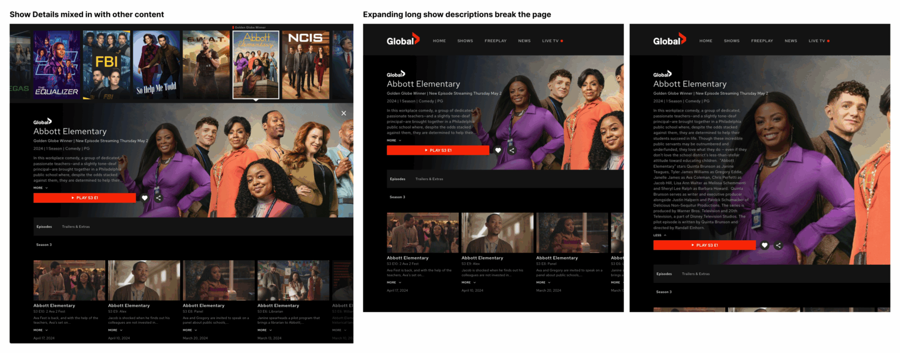
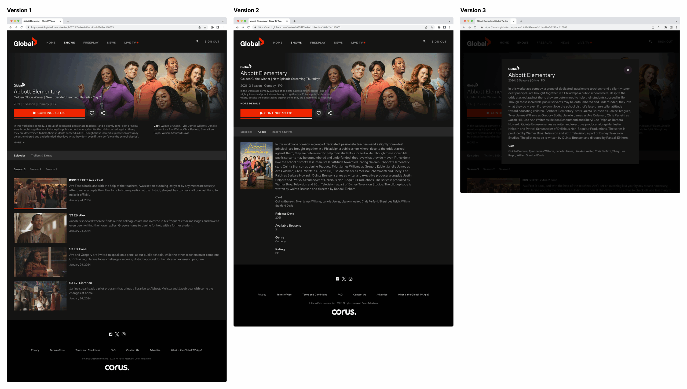

Overview
The Global TV Show Detail page had two concrete problems: it blended into the content grid it lived alongside, making it hard for users to know they'd arrived at a dedicated view — and when show descriptions were long, they broke the entire page layout.
I led the redesign from research through delivery. A competitive analysis across seven streaming platforms gave the team a shared baseline. Three design directions were explored before landing on a solution: a clean, purpose-built show page with a metadata modal and a grid-based episode layout that worked regardless of description length.
Show Detail pages lacked a clear visual boundary from the surrounding content grid. Long descriptions overflowed the layout. Episode content was buried below the fold — and the page had no structural answer for variable content length.
Competitive audit across 7 platforms → defined the two core structural failures → three concept directions → final design with metadata modal + grid episode layout, validated with engineering.
The Problem
A Show Detail page has one job: help the user decide whether to watch something — and if yes, start watching with as little friction as possible. The existing page failed at both, for two distinct structural reasons that became visible the moment you looked at real content.
"How might we design a Show Detail page that gives users the information they need to commit — without the layout breaking or the context getting lost?"

Show Details mixed in with other content
The detail page shared visual space with the browse grid beneath it, creating an ambiguous boundary. Users couldn't immediately tell they were on a dedicated show page — the experience felt like it belonged to the grid rather than standing on its own.
Expanding descriptions break the page
Show synopses varied wildly in length. When a description was long, it pushed the episode list below the fold and stretched the header area in ways the layout wasn't built to handle — creating a disjointed, broken-looking experience for perfectly valid content.
Neither problem was a content problem — they were structural design failures that no amount of editorial curation could fix. The layout itself needed to change.
Research
Before exploring solutions, I audited show detail pages across seven streaming platforms — Netflix, Disney+, Amazon Prime Video, Apple TV+, Crave, CBC Gem, and Hulu. The goal wasn't to copy a pattern, but to understand how the industry had solved the same two structural problems.
The audit surfaced consistent answers. Nearly every platform used one of two approaches: a metadata modal or expandable panel for handling variable-length descriptions without breaking the layout, and a visually distinct page frame — full-bleed hero, dedicated background — to create a clear separation from the browse experience.
The competitive analysis didn't prescribe a solution — it gave the team a shared vocabulary and aligned decision-making against real precedent. When we debated layout approaches, the data was already there.
All seven platforms used a dedicated, visually distinct page for show detail — none embedded detail within the browse grid. Five used some form of collapsible or modal treatment for long metadata.
Exploration

Prioritised the episode list as the primary content, with show info anchored in a narrow header. Kept a familiar structure for users comfortable with the existing page.
Concern: description overflow wasn't solved — long synopses still pushed episode content down.
Split the hero: artwork and CTA left, structured metadata panel right. Description got a "Read more" truncation to prevent overflow. Grid episode layout replaces the vertical list.
Strongest direction: solves both problems structurally — description is contained, page frame is clearly distinct.
Collapsed everything into a narrower, modal-style overlay — content stays behind the sheet, maintaining browsing context. Fast to invoke, fast to dismiss.
Concern: too compact for the amount of metadata a show page needs to carry — cast, ratings, episodes all felt squeezed.
Design Decisions
Version 2 became the foundation, refined through several rounds with engineering and content teams. The core principle throughout: every structural decision had to hold regardless of content length. A page that looks great with a two-sentence synopsis has to work equally well with ten.
The show artwork fills the top of the page edge to edge, with a dark gradient fade carrying into the content below. This creates an immediate, unambiguous visual boundary — users know they've arrived somewhere dedicated. The browse grid behind it disappears from attention, not from the DOM.
The synopsis is truncated to three lines with a "Read more" trigger — clicking opens a dedicated metadata modal that holds the full description, cast, ratings, and additional show info. The main page layout never reflows. Description length becomes irrelevant to the structural integrity of the page.
The episode list became a grid — thumbnail, episode number, title, and duration in a fixed-height card. This keeps the episode section visually stable regardless of how many items there are and allows season navigation without a page scroll to reorient. The grid also scales cleanly to different viewport widths.
The "Watch Now" button is fixed in the header zone — it never scrolls away. A user who's already decided shouldn't have to scroll to find the action. The secondary CTA (Add to Watchlist) sits adjacent, always visible, as a lightweight alternative for users who aren't ready to commit.
Reflection
Starting with competitive analysis — before any sketching — proved its value when design decisions got debated in review. The data absorbed the friction. We weren't arguing about preference; we were discussing tradeoffs against documented precedent. That's a much more productive conversation.
The biggest structural lesson: the metadata modal wasn't a feature, it was a layout constraint solver. Giving variable-length content its own dedicated container — rather than trying to make the main layout flex around it — was the insight that unlocked everything else.
Run usability testing specifically on the "Read more" → metadata modal flow. The structural solution is sound, but I'd want to validate whether users understand that the modal holds cast, ratings, and other metadata — or whether they expect those details to be directly on the page.